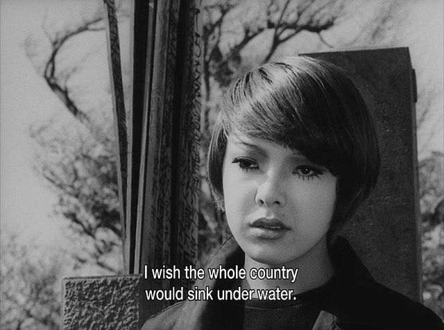

Aesthetic realism holds beauty to be a real property of works of art, there to be discovered by the discerning viewer. Ontological realism holds that physical objects exist independently of our own minds. Epistemological realism is the view that statements are true, or false, independently of whether we believe them to be true or false.
Adapted from Baggini & Fosl, The Philosopher's Toolkit
Objective Beings
Every block of stone has a statue inside it and it is the task of the sculptor to discover it. I saw the angel in the marble and carved until I set him free.Michelangelo, Lettera a messer Benedetto Varchi
In anything at all, perfection is finally attained not when there is no longer anything to add, but when there is no longer anything to take away, when a body has been stripped down to its nakedness.
Antoine de St. Exupery, Terre des Hommes
Free Will
There's no free will, says the philosopher; To hang is most unjust. There is no free will, assents the officer; We hang because we must.
Ambrose Bierce, Epigrams

Body Without Organs
When you will have made him a body without organs, then you will have delivered him from all his automatic reactions and restored him to his true freedom.
Antonin Artaud, To Have Done with the Judgment of God
The trouble is that we have a bad habit, encouraged by pedants and sophisticates, of considering happiness as something rather stupid. Only pain is intellectual, only evil interesting. This is the treason of the artist: a refusal to admit the banality of evil and the terrible boredom of pain.
Ursula K. Le Guin, The Ones Who Walk Away From Omelas
No 44
In a little while you will be alone in shoreless space, to wander its limitless solitudes without friend or comrade forever - for you will remain a thought, the only existent thought, and by your nature inextinguishable, indestructible.
Mark Twain, The Mysterious Stranger
There is no future. There is no past. Time is simultaneous, an intricately structured jewel that humans insist on viewing one edge at a time, when the whole design is visible in every facet.
Alan Moore, Watchmen
One never reaches a horizon. It is not a line; it has no place; it encloses no field; its location is always relative to the view. To move toward a horizon is simply to have a new horizon. A horizon is a phenomenon of vision. One cannot look at the horizon; it is simply the point beyond which we cannot see. There is nothing in the horizon itself, however, that limits vision, for the horizon opens onto all that lies beyond itself. What limits vision is rather the incompleteness of that vision.
James P. Carse, Finite and Infinite Games
Hermeneutic Circle
Hovering in the background, like a specter, the ultimate possibility of no possibility, of no-more-being-there, the possibility of impossibility. What ultimately lies ahead for Dasein, its uttermost potentiality, is death.
John D. Caputo, Hermeneutic: Facts and Interpretation
The Victorious Ones have announced that emptiness is the relinquishing of all views. Those who are possessed of the view of emptiness are said to be incorrigible.
Verse, Mūlamadhyamakakārikā
God Eternally Geometrizes
They did not know it was impossible, so they did it.
Mark Twain
No limiting qualities are to be attributed to the Absolute.
Plutarch, Convivalium Disputationum libri novem
Concerns of Time
The concerns of time must be attended to in time. I need not make haste to explore the whole secret of a star; if it were vanished quite out of the firmament, so that no telescope could longer discover it, I should not despair of knowing it entirely one day.
Ursula K. Le Guin, The Dispossessed
Drifting in a sultry day on the sluggish waters of the pond, I almost cease to live and begin to be. A boatman stretched on the deck of his craft and dallying with the noon would be as apt an emblem of eternity for me as the serpent with his tail in his mouth. I am never so prone to lose my identity. I am dissolved in the haze.
Henry David Thoreau, Journals